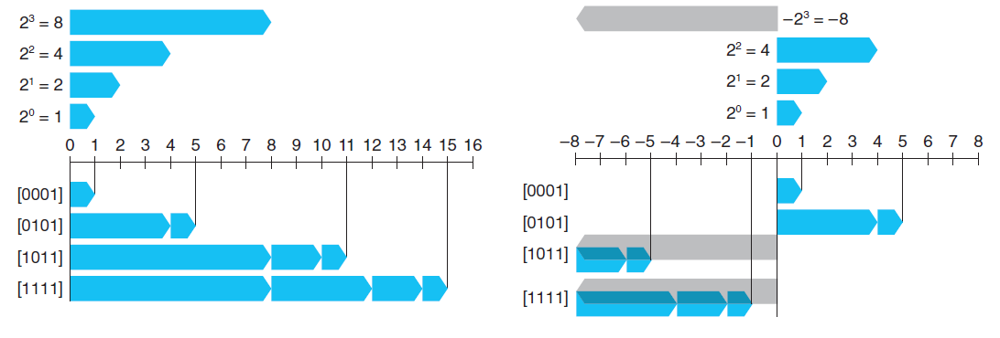
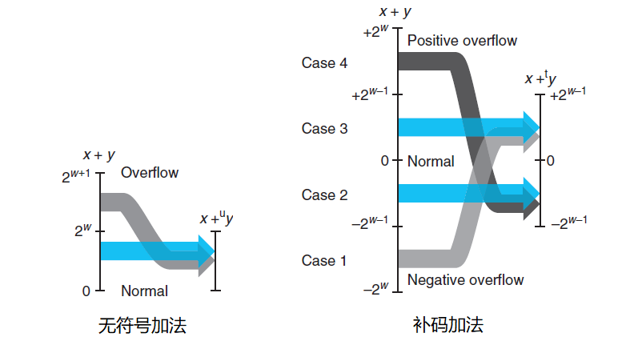
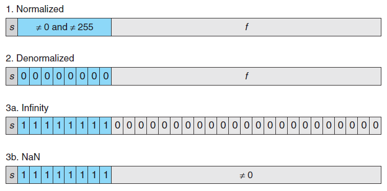
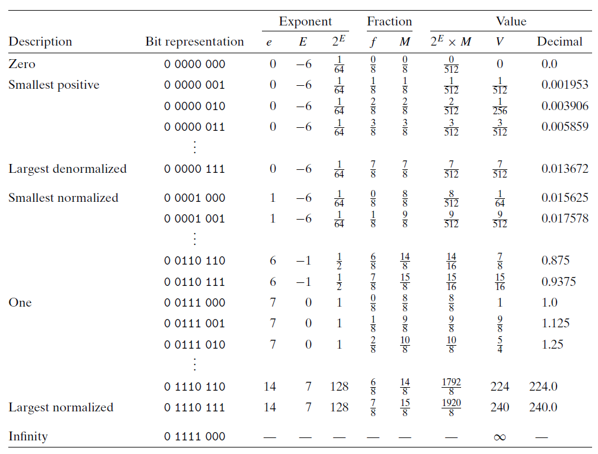

信息的表示和处理¶
《深入理解计算机系统》 - Randal E. Bryant - 第三版，第二章的读书笔记，本文中的所有代码可在GitHub仓库中找到
信息存储¶
数据大小¶
例子"sizeof"打印了常见类型的大小。其中，long类型在32位机器上是"4 bytes"，在64位机器上是"8 bytes"。
> ./main
char: 1
short: 2
int: 4
long: 8
long long: 8
float: 4
double: 8
字节顺序¶
例子"show_bytes"按字节大小，打印了不同类型变量的在内存中的值。
int main()
{
int ival = 0x3039;
float fval = (float)ival;
int *pval = &ival;
show(ival);
show(fval);
show(pval);
const char s[] = "abcd";
show_bytes((byte_pointer)s, sizeof(s));
return 0;
}
> ./main
# 0x3039 int类型的变量在内存中的值
39 30 00 00
# 0x3039 float类型的变量在内存中的值
00 e4 40 46
# 0x3039 int类型的指针在内存中的值
50 28 04 ee fe 7f 00 00
# "abcd" 字符串在内存中的值
61 62 63 64 00
上面例子中，存储字节顺序为小端模式，即低字节存在低地址位。
移位运算¶
| 操作 | 值 |
|---|---|
| 参数x | [0110_0011], [1001_0101] |
| x << 4 | [0011_0000], [0101_0000] |
| x >> 4 (逻辑右移) | [0000_0110], [0000_1001] |
| x >> 4 (算术右移) | [0000_0110], [1111_1001] |
上表显示了8位参数x的两个不同的值做不同的移位操作得到的结果。除了黑体条目之外，其他的位移操作都填充0。
在C语言中，
- 对有符号数，使用算术右移
- 对无符号说，使用逻辑右移
例子"right_shift"分别对有符号树和无符号数进程了位移操作：
void logic_right_shift()
{
printf("%s\n", __func__);
uint8_t i = 0b10010000;
uint8_t i2 = i >> 4;
std::cout << "\ti: 0b" << to_bin_str(i)
<< ", (i >> 4): 0b" << to_bin_str(i2)
<< std::endl;
}
void arithmetic_right_shift()
{
printf("%s\n", __func__);
int8_t i = 0b10010000;
int8_t i2 = i >> 4;
std::cout << "\ti: 0b" << to_bin_str(i)
<< ", (i >> 4): 0b" << to_bin_str(i2)
<< std::endl;
int8_t j = 0b01010000;
int8_t j2 = j >> 4;
std::cout << "\ti: 0b" << to_bin_str(j)
<< ", (i >> 4): 0b" << to_bin_str(j2)
<< std::endl;
}
> ./main
logic_right_shift
i: 0b10010000, (i >> 4): 0b00001001
arithmetic_right_shift
i: 0b10010000, (i >> 4): 0b11111001
i: 0b01010000, (i >> 4): 0b00000101
整数¶
整数表示¶
对于无符号整数，采用常规二进制编码。对于有符号整数，采用补码(two's-complement)编码，将字的最高有效位解释为负权。下图显示了四位二进制的两种整数表示的结果：

整数转换¶
C语言中，无符号整数和有符号整数的规则是：
- 保持位置不变
例子"conv"在无符号数和有符号数之间进行了转换：
int main()
{
short int v = -12345;
unsigned short uv = (unsigned short) v;
printf("v = %d, uv = %u\n", v, uv);
unsigned short u = 0xFFFF;
short int tu = (short int) u;
printf("u = %u, tu = %d\n", u, tu);
return 0;
}
# 53191 + 12345 = 2^16
# 65535 + 1 = 2^16
> ./main
v = -12345, uv = 53191
u = 65535, tu = -1
整数运算¶
下图显示了“无符号加法”和“补码加法”的各种溢出情况：
- 无符号加法会出现正溢出，导致最终结果少2^w
- 补码加法会出现正溢出和负溢出
- 正溢出会使结果变为负数，导致最终结果相差2^w
- 负溢出会使结果变为正数，导致最终结果也相差2^w

浮点数¶
IEEE浮点表示¶
定点表示法不能很有效地表示非常大的数字。因此，IEEE规定了浮点表示法，用V=(-1)^s * M * 2^E的形式来表示一共数：
- 符号(s)
- 决定这个数使负数还是正数
- 尾数(M)
- 一个二进制小数，范围是1-2之间，或者0-1之间
- 阶码(E)
- 对浮点数加权，权重是2的E次幂
C语言中，有两种浮点数，它们的结构是一样的，区别在于尾数和阶码的长度不同：
- 单精度浮点数(float, 4 bytes)
- 8位阶码域，23位尾数域
- 双精度浮点数(double, 8 bytes)
- 11位阶码域，52位尾数域
下图是单精度浮点数，根据阶码的值，分成的三种不同情况：

- 规格化的值
- 最普遍的情况，既不是最小的值，也不是最大的值
- 阶码域转换为阶码
E的公式是：E=e-Bias- 其中，e是k位二进制阶码域的值，Bias等于
2^(k-1)-1(单精度是127，双精度是1023)
- 其中，e是k位二进制阶码域的值，Bias等于
- 尾数域转换位尾数
M的公式是：M=1+f- 其中，f是二进制小数尾数域的值
0.f(n-1)...f1f0
- 其中，f是二进制小数尾数域的值
- 非规格化的值
- 数值非常小的情况
- 阶码域全位零，阶码
E的计算公式是：E=1-Bias=2-2^(k-1)(单精度是-126，双精度是-1022) - 尾数域转换位尾数
M的公式是：M=f，不包含隐含的开头的1
- 特殊值
- 数值非常大的情况，或者表示不是一个数
- 阶码域全为1，且尾数域全为零时
- 符号位
s=0，表示正无穷 - 符号位
s=1，表示负无穷
- 符号位
- 阶码域全为1，且尾数域不全为零时
- 表示不是一个数，称为
NAN，例如：√-1
- 表示不是一个数，称为
下表展示了假定的8位浮点格式的示例，其中有k=4的阶码域和n=3的尾数域。表被分成了三个区域，描述了互不重叠的三类数字：

舍入¶
因为表示方法限制了浮点数的范围和精度，所以浮点运算只能近似地表示实数运算。对于值x，我们采用舍入运算，找到“最接近的”匹配值x'。IEEE浮点格式定义了四种不同的舍入方式，将一个小数舍入到最接近的整数：
| 方式 | 1.40 | 1.60 | 1.50 | 2.50 | -1.50 |
|---|---|---|---|---|---|
| 向偶数舍入 | 1 | 2 | 2 | 2 | -2 |
| 向零舍入 | 1 | 1 | 1 | 2 | -1 |
| 向下舍入 | 1 | 1 | 1 | 2 | -2 |
| 向上舍入 | 2 | 2 | 2 | 3 | -1 |
浮点运算¶
浮点数由于舍入运算的存在，并不遵守普遍的算术属性，如结合性。例子"float"中分别对(3.14 + 1e20) - 1e20和3.14 + (1e20 - 1e20)做了浮点运算，前者值为零，后者值为3.14。
C语言中，在int、float格式之间进行强制类型转换时，程序改变数值和位模式的原则如下：
- 从
int转换成float，数字不会溢出，但是可能被舍入 - 从
float转换成int，值将会向零舍入
int main()
{
// 因舍入运算，丢失了3.14
printf("((3.14 + 1e20) - 1e20) = %f\n", (3.14 + 1e20) - 1e20);
printf("(3.14 + (1e20 - 1e20)) = %f\n", 3.14 + (1e20 - 1e20));
// 向零取舍
float a = -1.999;
int b = a;
double c = 1.999;
int d = c;
printf("int(%f)=%d\n", a, b);
printf("int(%f)=%d\n", c, d);
return 0;
}
> ./main
((3.14 + 1e20) - 1e20) = 0.000000
(3.14 + (1e20 - 1e20)) = 3.140000
int(-1.999000)=-1
int(1.999000)=1